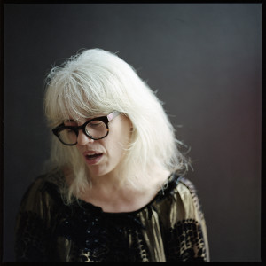

Artist-in-Residence (AiR) at the 8th International Conference on Movement and Computing
Yanira Castro is the 2022 MOCO Artist in Residence.
Yanira Castro is a Puerto Rican born interdisciplinary artist making work in New York for over 20 years. In 2009, she formed the collaborative group, a canary torsi, an anagram of her name. Castro’s work borrows from dance, performance, theater, and visual art often utilizing interactive technology to form hybrid projects. The work takes different forms — performances, installations, online and site-based projects — negotiating complexities of sources, authorship and practice with a team of collaborators (including the audience) to build the work as a communal act.
https://acanarytorsi.orgThe MOCO AiR will work with stakeholders in research, teaching, industry, and outreach as part of the 8th MOCO at Columbia College Chicago. This will involve the exploration of creation of new work alongside several groups of stakeholders, such as: 1) students at Columbia College Chicago, with on-campus residencies, 2) researchers at MOCO, acting as a member of the organizing committee, 3) community members in Chicago, and 4) audience members at public and conference-oriented showings.
